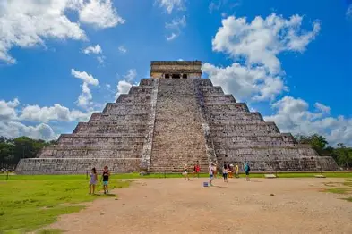
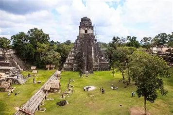

Descubre las ciudades, los templos y las construcciones mayas.
La arquitectura maya se distingue por sus templos, palacios, plazas y edificios ceremoniales. Sus construcciones muestran conocimientos técnicos y una estrecha relación con las creencias y la organización de sus ciudades.
Importante ciudad maya de la península de Yucatán, reconocida por el templo conocido como El Castillo.

Sitio arqueológico de Chiapas famoso por sus edificios, esculturas e inscripciones.

Antigua ciudad maya conocida por sus edificios monumentales y su estilo arquitectónico Puuc.

Antigua ciudad maya situada en la actual Guatemala, conocida por sus grandes templos y plazas.
Utilizaban materiales como la piedra caliza y desarrollaron técnicas de construcción adaptadas a cada región. Sus edificios podían incluir escalinatas, bóvedas, relieves y elementos decorativos.
Sus ciudades permiten conocer aspectos de la organización social, política y religiosa de esta civilización. Actualmente, muchos sitios arqueológicos son importantes para la investigación y la conservación del patrimonio cultural.